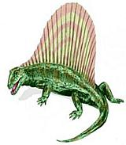

SAFARI
Users
 Fish in shallow waters learned to breath air as a matter of survival, and there are a fair number of air breathing fish living today. A variety of lobe finned fish took a liking to land (plenty of big bugs to eat and no sharks) and evolved into a "Tetrapod Amphibian".
The Tetrapods branched into several lines, and the lineage to which we
and all other mammals belong is the Synapsids. While the famous
Permian Synapsid Dimetrodon used a large fin for temperature regulation,
later Synapsids took cooling and heating internal, becoming "warm blooded"
and developing fur coats. This differs from the dinosaurs who also became
warm blooded but developed feathers instead.
Dimetrodon drawing by
Arthur Weasley distributed under
Creative Commons
Attribution v2.5.
This chart shows descendents of the Tetrapods (for simplicity, extinct (thus inedible) families, minor lines and some intermediate phases have been omitted).
- Amphibians (Salamanders, Frogs)
- Anapsida - Turtles
- Diapsids (Lizards, Snakes, Birds, Dinosaurs, Crocodiles
- Synapsids (mammal-like reptiles)
- Mammals
- Marsupials (Possum, Kagaroo, etc.)
- Monotrems (Platypus, Echidnas)
- Eutheria
- Ungulates
- Rodents & Rabbits
- Carnivors
- Horse
- Armadillos
- Humans - Long Pig
- Mammals